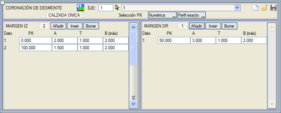
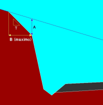

| |
|
YARMA ŞEV TACI
|
Yarma enkesiti aşağıdan yukarıya doğru uygulanırsa, yüzeye hangi şevle ulaşılacağı önceden bilinemez; arazinin yüzeydeki katmanları genellikle ayrışmış olduğundan, daha yatık bir denge şevine sahip olma eğilimindedirler. 
Bu menü, tip kesitlerden bağımsız olarak, yarma kesitleri için aşağıdaki parametrelere göre değişken bir taç şevi tanımlamayı sağlar: 
Taç kuralı, [Kaydet]  ve [Yükle] ve [Yükle]  seçenekleri kullanılarak .crd uzantılı dosyalarda saklanabilir ve geri yüklenebilir ve diğer tüm tablolar gibi, diğer DÜŞEY GÜZERGAH verileriyle birlikte .vol dosyasında saklanır. seçenekleri kullanılarak .crd uzantılı dosyalarda saklanabilir ve geri yüklenebilir ve diğer tüm tablolar gibi, diğer DÜŞEY GÜZERGAH verileriyle birlikte .vol dosyasında saklanır.Eğer jeoteknik kesitte bitkisel toprak ve/veya zayıf zemin derinliği tanımlanmışsa, zayıf zeminde bir yarma vektörü uygulayarak da yarma şev tacını hesaplamak mümkündür. |